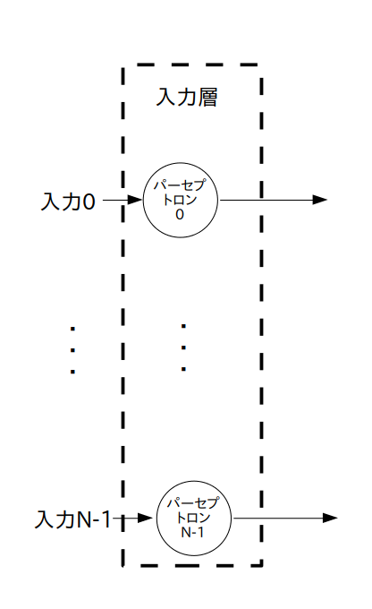

前のページで 3 層ニューラルネットワークのディープラーニングを行なったので、ここでは未知の入力データのクラス分類をしてみます。と言っても基本的な事は既に説明済みです。
まず分類をしたい未知の入力データをページ3の図2の様に 「1 x N 行列の定数」として入力データをデータフロー化します。図1にページ3の図2を再掲します。
1 x N 行列の未知入力データを定数 OP ノード として表現する
この未知入力データを重みとバイアスが学習済みのニューラルネットワークの入力データとし、出力 OP ノードを run すると出てくる値は以下の図2の様に 1 X M 行列となります。
ここで「$y'_{j}$ は入力データがクラス $j$ に属する確率」でしたので、未知入力データがどのクラスに分類出来るのか判定出来ます。もし明らかに外れていたらこの未知データを教師データに含めて再びディープラーニングを実行します。